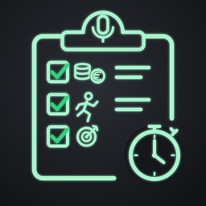
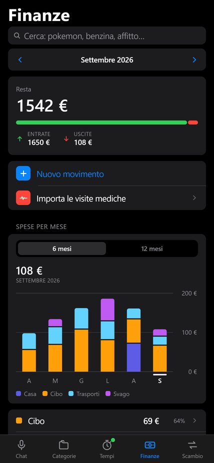
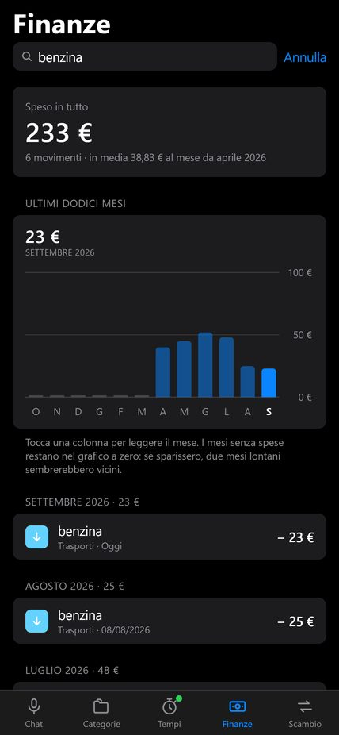
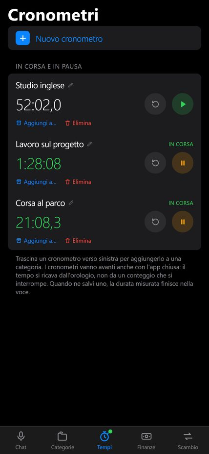

Detta le note, lei le ordina.
Per iPhone e iPad · 3,99 € · italiano e inglese



«Ho speso 23 euro di benzina» va in Finanze, «corsa di 40 minuti al parco» va in Allenamenti, «consegnare il preventivo entro venerdì» va in Lavoro. Importi, durate, distanze, date e scadenze vengono letti da soli. Quando l'app non è sicura, te lo chiede.
Quanti ne vuoi, ognuno col suo nome. Continuano a contare anche con l'app chiusa, e quando hai finito la durata va nella scheda giusta.
Vita, Finanze, Note, Allenamenti, Obiettivi, Lavoro, Salute. Ognuna con il suo elenco e le sue schede.
Nessun account, nessuna registrazione, nessun server. Note, conti e allegati sono salvati solo sul dispositivo e l'app non li invia a nessuno. Per dettare usa la tastiera di iOS: l'app non registra e non riceve audio. Informativa sulla privacy
LifeHub (LifeHub Journal on the App Store in English) is a journal you fill in by talking. "Spent 23 euros on fuel" goes to Money, "40-minute run in the park" goes to Training, "send the quote to the client by Friday" goes to Work. It tracks income and spending in euro, keeps as many named timers as you like, and stores everything only on your device: no account, no server.